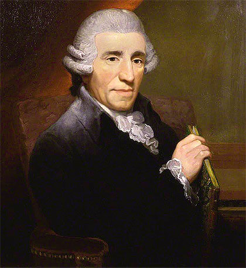

 (Rohrau, Austria, 1732 - Viena, 1809) Compositor austriaco. Con Mozart y Beethoven, Haydn es el tercer gran representante del clasicismo vienés. Aunque no fue apreciado por la generación romántica, que lo consideraba excesivamente ligado a la tradición anterior, lo cierto es que sin su aportación la obra de los dos primeros, y tras ellos la de Schubert o Mendelssohn, nunca habría sido lo que fue. Y es que a Haydn, más que a ningún otro, se debe el definitivo establecimiento de formas como la sonata y de géneros como la sinfonía y el cuarteto de cuerda, que se mantuvieron vigentes sin apenas modificaciones hasta bien entrado el siglo XX.
Nacido en el seno de una humilde familia, el pequeño Joseph Haydn recibió sus primeras lecciones de su padre, quien, después de la jornada laboral, cantaba acompañándose al arpa. Dotado de una hermosa voz, en 1738 Haydn fue enviado a Hainburg, y dos años más tarde a Viena, donde ingresó en el coro de la catedral de San Esteban y tuvo oportunidad de perfeccionar sus conocimientos musicales.
Allí permaneció Haydn hasta el cambio de voz, momento en que, tras un breve período como asistente del compositor Nicola Porpora, pasó a servir como maestro de capilla en la residencia del conde Morzin, para quien compuso sus primeras sinfonías y divertimentos.
El año 1761 se produciría un giro decisivo en la carrera del joven músico: fue entonces cuando los príncipes de Esterházy -primero Paul Anton y poco después, a la muerte de éste, su hermano Nikolaus- lo tomaron a su servicio. Haydn tenía a su disposición una de las mejores orquestas de Europa, para la que escribió la mayor parte de sus obras orquestales, operísticas y religiosas.
El fallecimiento en 1790 del príncipe Nikolaus y la decisión de su sucesor, Anton, de disolver la orquesta de la corte motivó que Joseph Haydn, aun sin abandonar su cargo de maestro de capilla, instalara su residencia en Viena. Ese año, y por mediación del empresario Johann Peter Salomon, el músico realizó su primer viaje a Londres, al que siguió en 1794 un segundo. En la capital británica, además de dar a conocer sus doce últimas sinfonías, tuvo ocasión de escuchar los oratorios de Händel, cuya impronta es perceptible en su propia aproximación al género con La Creación y Las estaciones.
Fallecido Paul Anton ese mismo año de 1794, el nuevo príncipe de Esterházy, Nikolaus, lo reclamó de nuevo a su servicio, y para él escribió sus seis últimas misas, entre las cuales destacan las conocidas como Misa Nelson y Misa María Teresa. Los últimos años de su existencia vivió en Viena, entre el reconocimiento y el respeto de todo el mundo musical.
La aportación de Haydn fue trascendental en un momento en que se asistía a la aparición y consolidación de las grandes formas instrumentales. Precisamente gracias a él, dos de esas formas más importantes, la sinfonía y el cuarteto de cuerda, adoptaron el esquema en cuatro movimientos que hasta el siglo XX las ha caracterizado y definido, con uno primero estructurado según una forma sonata basada en la exposición y el desarrollo de dos temas melódicos, al que seguían otro lento en forma de aria, un minueto y un rondó conclusivo.
No es, pues, de extrañar que Haydn haya sido considerado el padre de la sinfonía y del cuarteto de cuerda: aunque ambas formas existían como tales con anterioridad, por ejemplo entre los músicos de la llamada Escuela de Mannheim, fue él quien les dio una coherencia y un sentido que superaban el puro divertimento galante del período anterior. Si trascendental fue su papel en este sentido, no menor fue el que tuvo en el campo de la instrumentación, donde sus numerosos hallazgos contribuyeron decisivamente a ampliar las posibilidades técnicas de la orquesta sinfónica moderna.
{kind=link}